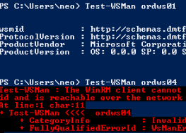

1. Ensure your firewall and all connections are allowed
Enable-PSRemoting -Force
Set-Item wsman:\localhost\client\trustedhosts *
2: Test other machines
Test-WSMan <computername>

3. Exec commands on remote machines
Invoke-Command -Computer <computername> -ScriptBlock {ipconfig /all} -credential <domain>\<user>
or drop into PowerShell
Enter-PSSession -Computer <computername> -credential <domain>\<user>